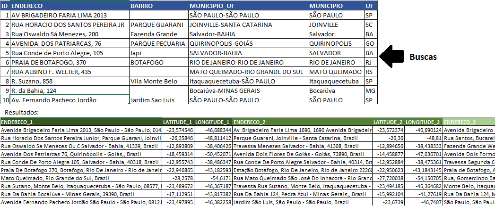

João Pedro Pereira
João Pedro Pereira
Aplicação Web com Flask e Docker
Mon 07 Sep 2020Esse projeto tem o objetivo de oferecer um serviço de busca de coordenadas geográficas a partir de endereço(s) informado(s) em uma planilha Excel. A arquitetura da solução:
Tecnologias utilizadas:
• Flask: Micro-framework escrito em python para desenvolvimento web;
• Mapbox Geocoding API: API para coleta das coordenadas;
• Postgresql: Banco de dados para armazenamento;
• Docker: Container para rodar e isolar a aplicação;
Inicialmente pensei em desenvolver um projeto para colocar em prática ferramentas que estava aprendendo: Flask e Docker. Partindo para a solução, resolvi criar um serviço, oferecendo de forma fácil e rápida, a possibilidade de buscar coordenadas geográficas a partir de endereços com uma API que tinha descoberto na época, o Mapbox Geocoding API. Para manter a parte fácil da coisa, utilizei um template para o desenvolvimento web em Flask, para que fosse intuitivo para um end user utilizar o serviço com uma planilha Excel. E para concluir, coloquei um banco de dados para armazenamento das consultas e fiz rodar tudo em containers do Docker.
Essa API do Mapbox, de várias outras que eles possuem, traz tanto as coordenadas geográficas pelo endereço quanto o oposto, e podem ser feitas até 100.000 requests gratuitas. Veja aqui a documentação para mais informações.
Chega de bla bla blá and let’s to the code:
Passo 1: Montando o back-end
Primeiro desenvolvi uma função em Python onde são feitas a manipulação da planilha e a consulta ao Mapbox Geocoding API, o core da aplicação.
Vamos entender um pouco melhor a resposta da API. Na linha 39, quando passo o endereço completo para o request, a ´response´ está em um formato GeoJSON baseado em JavaScript Object Notation (JSON). O retorno do primeiro exemplo é o seguinte:
Os resultados estão dentro de features, que por sua vez estão ordenadas as 3 localizações mais similares. Dessa forma, coleto os seguintes objetos:
• place_name: Endereço completo do resultado
• center: Coordenadas geográficas [o que queremos! :) ]
Para o banco de dados, criei que uma função que utiliza a famosa biblioteca SQLAlchemy para armazenar as consultas com o postgresql. Vou mostrar mais para frente como usá-lo com o Docker.
Se vocês perceberem nesses dois módulos, temos variáveis de configuração que são lidas de um arquivo chamado ‘settings.toml’ com o Dynaconf. É bem útil para centralizar configs:
[default]
UPLOAD_FOLDER = 'uploads/'
DATABASE_URL = 'postgres://postgres:password123@db/coordenadas_api'
MAPBOX_TOKEN = 'pk.eyJ1Ijoiam9hb3BlZHJvdnRwIiwiYSI6ImNrZGJ4cDR4cTBmeDIycnA5OHZtMXRhdmsifQ.MNIytCWzgUThbklaT79axA'
Passo 2: Desenvolvimento web - Flask
Por ser um microframework, o Flask não possui uma arquitetura definida. Sendo assim, para criar uma app com o Flask, podemos utilizar um único arquivo (para aplicações maiores é melhor trabalhar com Blueprints).
Pelo arquivo criado app.py, basicamente estou trabalhando com três rotas/páginas:
• Página principal: Recebe o arquivo excel
• Página de Download: Link disponível para baixar arquivo
• Rota para salvar o arquivo de download
No final, inicializamos o flask pelo app.run() com o debug ligado e com o host ‘0.0.0.0’ para ser acessado pelo localhost.
Passo 3: Docker image e Docker Compose
Com a Dockerfile, criei a imagem baseada em outra do Python 3.8:
Basicamente isso faz o seguinte:
- FROM python:3.8 => Puxando a imagem oficial da versão Python 3.8
- ADD . /coordenadas_API => Copiando todo o diretório atual para o caminho /coordenadas_API no meu container
- WORKDIR /coordenadas_API => altera para esse caminho do diretório no container quando a imagem for construída.
- RUN pip install -r requirements.txt => executa o comando para baixar as dependências do projeto
- CMD ["python","app.py"] => Executa continuamente o app.py
Depois utilizei o Docker compose, que serve para orquestrar os containers e automatizar de certa forma a construção das imagens. Para mais informações veja a documentação do compose aqui. Abaixo o arquivo docker-compose.yml:
Nesse arquivo yml temos configurações dos nossos serviços, que chamei de web e db (banco de dados).
Cada container rodará sua própria imagem:
web => imagem do Dockerfile presente na raiz do diretório(comando build .)
db => imagem do postgresql (postgres:12-alpine). Possui configs de variáveis de ambiente e diretórios para os volumes.
Para cada um temos configurações de portas, que é comunicação entre o container e o host (máquina).
E finalmente, vamos rodar:
docker-compose up -d
Se listar os containers ativos:

Percebam que o container Mapbox-API-Flask está ativo e ouvindo na porta 5000 da minha máquina.
Então, caso esteja tudo ok, basta acessar o localhost:5000
Depois de fazer o upload do arquivo preenchido, enviar e fazer o download, vamos olhar o resultado:

E a tabela armazenada no banco de dados? Vamos conferir lá no container pelo bash:
docker exec -it coordenadas_api_web_db_1 bash
Agora podemos inicializar o postgresql dentro do container:
Após selecionar o banco de dados ‘coordenadas_api’, basta realizar a query para consulta:
E voilà, tudo certo. Os dados estão lá!
Caso queiram mais detalhes, os scripts e os arquivos estão no meu repositório.
Meus agradecimentos para o Bruno Rocha do Codeshow e Eduardo Mendes que me inspiraram e ajudaram nesse projeto com o conteúdo que eles disponibilizam sobre Python, Flask, Docker e outras coisas mais.